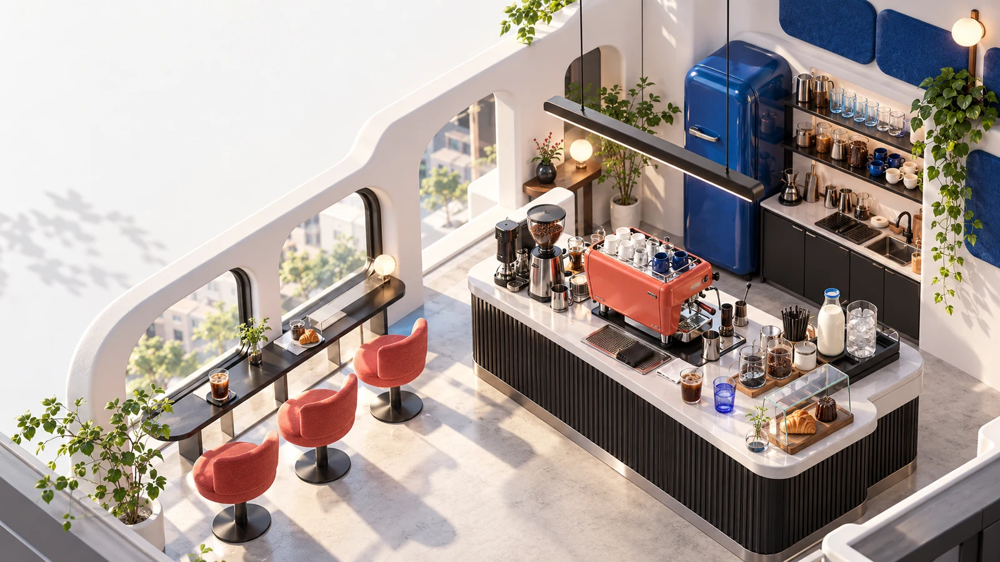

A LITTLE CAFE. A LOT OF KOREAN.주문은 한국어로.
주문은 한국어로.
서빙은 내 손으로.
따뜻하게? 얼음 없이? 두 잔?
손님의 말을 듣고, 나만의 작은 카페를 열어요.

01 / LISTEN주문을 듣고
필요하면 다시 듣거나 글로 확인해요.
02 / MAKE컵과 재료를 조합하고
커피·차·우유·얼음·설탕으로 만들어요.
03 / SERVE손님에게 직접 서빙해요
다른 조건은 고쳐서 다시 전달해요.